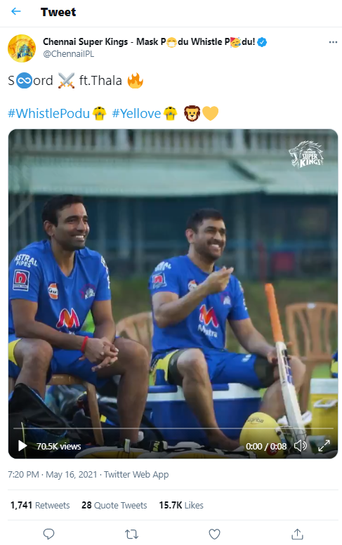

Highlights
1.IPL: CSK skipper MS Dhoni plays fetch with his dogs, video goes viral – WATCH
On Tuesday (May 18), Dhoni’s wife Sakshi Singh Dhoni took to Instagram to share video of their dogs playing fetch at their farmhouse in Ranchi. Fans were quick to spot MSD in the video, who could be seen standing alongside his daughter Ziva. Also, in the clip, Dhoni can be seen wearing CSK's training jersey.
May 25, 2021, 14:48 PM IST
2.Revealed: THIS is how MS Dhoni reacted when CSK bought Suresh Raina in IPL 2008 auction
With a base price of $125,000 (INR 55 lakhs approx), Raina’s stocks skyrocketed to a price of $650,000 (INR 2.6 crore approx) by the end of the inaugural auction.
May 24, 2021, 12:11 PM IST
The ‘sword celebration’ is a signature move of Jadeja when he reaches a milestone with the bat. Jadeja celebrates his milestone by using the bat like a sword and pretending to get ready for a fight like the kings would.
May 23, 2021, 12:59 PM IST
MS Dhoni was one such leader who managed Sreesanth quite admirably. Recently, former Indian cricketer Robin Uthappa recalled a hilarious incident involving MS Dhoni and Sreesanth that took place during a One-day International against Australia in Hyderabad post India’s 2007 T20 World Cup triumph.
May 22, 2021, 12:11 PM IST

NEWS
IPL: CSK skipper MS Dhoni plays fetch with his dogs, video goes viral – WATCH
On Tuesday (May 18), Dhoni’s wife Sakshi Singh Dhoni took to Instagram to share a video of their dogs playing fetch at their farmhouse in Ranchi. Fans were quick to spot MSD in the video, who could be seen standing alongside his daughter Ziva. Also, in the clip, Dhoni can be seen wearing CSK's training jersey.

Chennai Super Kings skipper MS Dhoni is a well-known dog-lover and whenever anyone posts a video or photo of the former India captain with one of his furry friends, it is bound to go viral.
On Tuesday (May 18), Dhoni’s wife Sakshi Singh Dhoni took to Instagram to share a video of their dogs playing fetch at their farmhouse in Ranchi. Fans were quick to spot MSD in the video, who could be seen standing alongside his daughter Ziva. Also, in the clip, Dhoni can be seen wearing CSK's training jersey.
Here's the video:
Revealed: THIS is how MS Dhoni reacted when CSK bought Suresh Raina in IPL 2008 auction
With a base price of $125,000 (INR 55 lakhs approx), Raina’s stocks skyrocketed to a price of $650,000 (INR 2.6 crore approx) by the end of the inaugural auction.

MS Dhoni and Suresh Raina are the two reasons why Chennai Super Kings have tasted success over the years. The ex-India stars have won innumerable games for the franchise and are icons in the Southern part of India. For fans who have followed them closely over the years, they would know that it is the friendship the two cricketers share – which reflects in their performances on the field and benefits CSK.
With most icon players already bought by franchises, CSK put in an early bid for Dhoni – the person they were looking at to lead the side. MSD, who was already the captain of the Indian limited-overs team in 2008, was bought by the Super Kings for $1.5 million at the 2008 players’ auction.
Soon after he was bought in early, CSK was looking at forming a core featuring Indian stars, and that is where Suresh Raina was considered. With a base price of $125,000 (INR 55 lakhs aprox), Raina’s stocks skyrocketed to a price of $650,000 (INR 2.6 crore approx) by the end of the inaugural auction.
By then, Raina had become friends with Dhoni and had spent a good two seasons with him. This benefitted the CSK as they went on to win three IPL titles and are to date considered one of the most consistent sides in the cash-rich league.
In a book titled ‘Believe’, Raina reveals what Dhoni told him after he was bought by CSK.
Like always, Dhoni kept it short and simple, he said merely three words ‘Maza aayega dekh’ (it will be fun).
Excerpt from the book: The IPL auctions happened, and like every other cricketer in the country, I was waiting eagerly to know which team I would be playing for. I was elated to go to the Chennai Super Kings. It meant Mahi Bhai and I would be playing for the same team. I heard from him almost immediately after I was bought in the auction. He said, ‘Maza aayega dekh.’ There was a lot of attention on him, of course. And looking at some of the other figures whom Chennai had bought—Matthew Hayden, Muttiah Muralitharan, and Stephen Fleming—I was just delighted to be in the same team as them. The IPL strengthened my bond with Mahi Bhai even further.
IPL 2021: CSK skipper MS Dhoni imitates Ravindra Jadeja’s “sword” celebration, video goes viral – WATCH
The ‘sword celebration’ is a signature move of Jadeja when he reaches a milestone with the bat. Jadeja celebrates his milestone by using the bat like a sword and pretending to get ready for a fight like the kings would.

It is no secret that MS Dhoni and Ravindra Jadeja are good friends! For CSK fans who follow CSK closely, it is known that Dhoni is fond of the all-rounder. The former India captain gave a glimpse of his fondness for Jadeja when he did a ‘sword celebration’ during the IPL. The ‘sword celebration’ is a signature move of Jadeja when he reaches a milestone with the bat. Jadeja celebrates his milestone by using the bat like a sword and pretending to get ready for a fight like the kings would.
During CSK’s practice session in the now-suspended IPL 2021, Dhoni performed the same celebration with a smile on his face even as Robin Uthappa looked along. The video was posted by CSK’s official Twitter handle days after the lucrative league was suspended due to the bubble breach and numerous COVID-19 cases in the teams.
Here's the video
‘Just go bowl’: Robin Uthappa recalls when MS Dhoni refused to entertain Sreesanth’s ‘Mankad’ appeals
Robin Uthappa has revealed a hilarious incident featuring S Sreesanth, MS Dhoni and the Australia cricket team, narrating how the former India captain was good a managing the fast bowler from Kerala. The incident took place during a T20I match between India and Australia. A week after India had lifted the T20 World Cup in South Africa, they hosted Australia for a T20 match in Hyderabad, with Uthappa explaining what had transpired.

"It was just after the World Cup, and we were playing Australia in Hyderabad. And I think it was either Andrew Symonds or Hussey who had backed up. And then Sree (Sreesanth) stopped, took the stumps off and goes 'How is that? How is that?' So MS came running from there, pulled him and said 'just go bowl bro'. Someone who actually handled him really well was MS," Uthappa told stand-up comedian Sorabh Pant on his YouTube show 'Wake Up With Sorabh'.